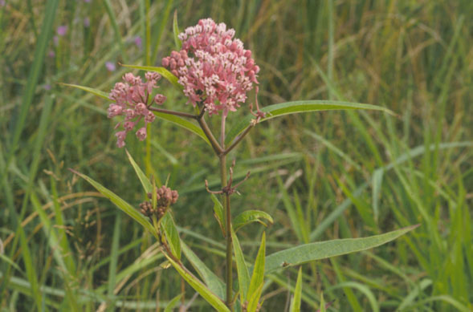
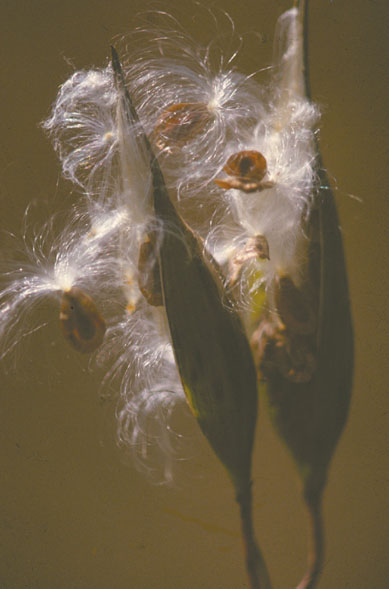
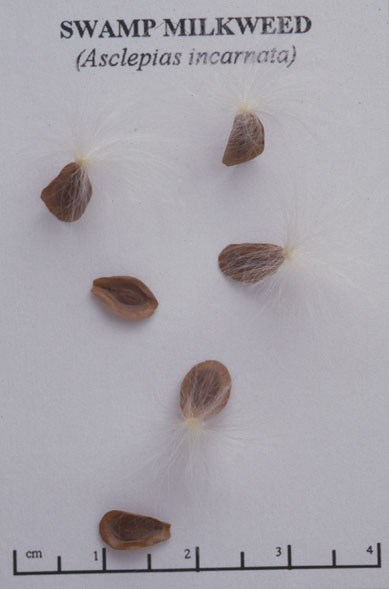

Asclepias incarnata
Family: Asclepiadaceae
Swamp Milkweed
Swink/Wilhelm #3


FLOWERING: Late June to August
SEED TIMING: Mid-September to October
HABITAT: Wet or damp areas in full sun or partial shading
DIAGNOSTIC FEATURES: 2 - 4 feet tall. Primary leaves opposite and lanceolate with short petioles. Flowers pink to purple, in umbels with typical Asclepias intricate, hourglass shape. Milky juice in stems and leaves.
TO PICK: Seeds with downy parachutes form in erect pods called follicles. There are typically about one to ten pods per plant. Follicles are long, slender, pointed, and very slightly hairy. Ripeness is indicated when pod loses much of its original green color and/or begins to split open naturally. The seeds also indicate ripeness if they have become tan or brown.